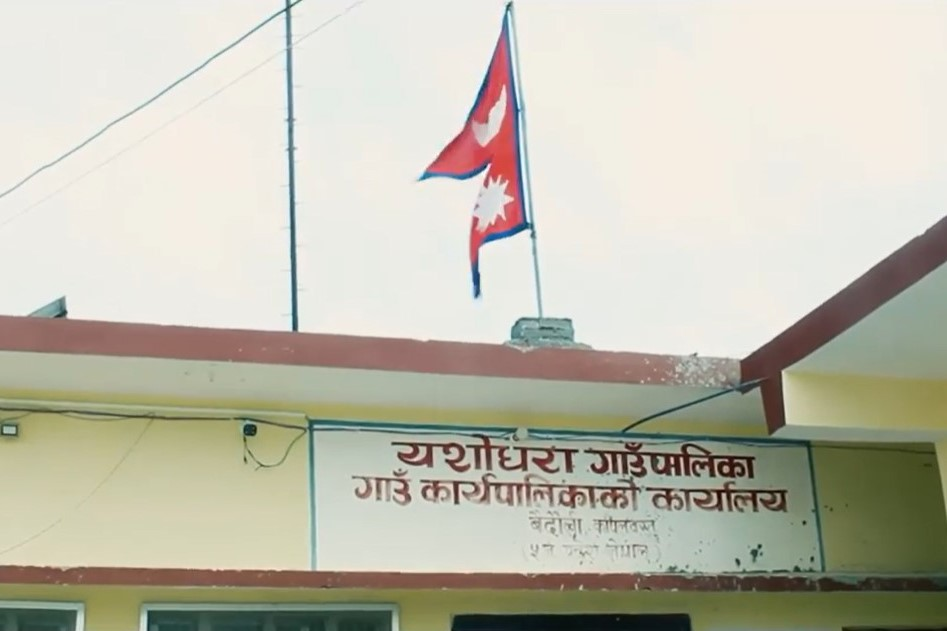

Introduction
Yashodhara is a Rural
Municipality in the Kapilvastu district of Lumbini province. Its total area is 68.66 sq.
km.
This project is created
through the collaboration of MapBud and Geomatics Engineering Society with the vision to
support and contribute in making digital Nepal.
This task is specially
created for mapping buildings in the Yasodhara Municipalities. Beside buildings, other
features like road, waterbodies and landuse are also encouraged to map. The data
generated will be used for mapping and analyzing the community to help with
understanding their needs for basic amenities, help carry out various developmental
activities and support the mission of Mapbud to make digital Nepal.
Task
Instructions
**Project Specific Mapping Notes**
# Imagery
Please use Maxar Premium Imagery. And PLEASE DO NOT
MAKE ANY EDITS ON INTERNATIONAL BOUNDARY.
Mark your task only as Bad Imagery if it is either cloudy
or if there is no high-resolution imagery available. Often on slower connections, it
takes a moment for the imagery to start tiling in.
# Features to map:
Help us to trace the following features in the remote
hills of western Nepal.
## Buildings
For Buildings, the shape is generally rectangular with a
small size; they are found in clusters of repetitive rectangles close to each other and
additionally noticing the shadows can provide information on its height and even help
differ one house from another.“building=yes” tag is used for building
features.
**Tips:**
For digitizing buildings in JOSM, the “building
tool” plugin can be very helpful as it creates a perfect rectangle with automatic
tags with the key-value pair `“building=yes”`.
Please note that most buildings in Nepal are rectangular
in shape and what seems like circular huts could be a haystack.
## Waterways
Digitizing a river can be of two types. All rivers are
represented with a single line in the center of the feature that is necessarily tagged
`“waterway=river”`. And for a large river and water body, a polygon area is
made which is tagged either `“natural=water”` or
`“waterway=riverbank”`.
## Roadways
Roads can be easily identified in the imagery as they have
a continuous linear shape. The following tags can be used for the road
feature:
* `highway=trunk`: A major road connecting two or more
cities, mostly national highways.
* `highway=primary`: A road corridor that carries a huge
volume of traffic between arterial roads and has a high density of public transport
services.
* `highway=secondary`: A collector road that carries a
lower volume of traffic and has either no public transport service or a lower density of
public transport service.
* `highway=tertiary`: A motorable road serving several
villages that connects rural areas to cities.
* `highway=residential`: A road accessing or around
residential areas.
* `highway=path`: A foot trail that connects two or more
villages as well and paths inside the community that is accessed through the
foot.
## Forest
Forests are generally large in size, irregular in shape,
and coarse in texture. They can be easily identified from the images. The tags
`“Natural= wood”` are commonly used for mapping the forest. The additional
and more specific tags like `“wood=coniferous”`, `“wood=mixed”`,
etc also can be used in absolute certainty.
Use `natural = tree` for a single tree, `natural =
tree_row` for a row of trees, `natural = scrub` for uncultivated land covered with
shrubs or bushes
**Tips:** The “Fast Draw”JOSM plugin can be
used for mapping the forest.
## Bridge
`bridge=yes` and `layer=1`:
* A bridge is a structure built to span a physical
obstacle, such as a body of water, valley, or road, without closing the way underneath
[(OSM Wiki for Bridge)](https://wiki.openstreetmap.org/wiki/Key:bridge)
* `ford=yes` A ford is a small part of a highway where a
waterway runs over it. [(OSM Wiki for Ford)](https://wiki.openstreetmap.org/wiki/Tag:ford%3Dyes)
## Reference:
Please refer to [this link](https://drive.google.com/drive/folders/1YGxx8kj_AibC2E7a67SoBLpjzFBlrFKw?usp=sharing)
for detailed documentation on how to map.
HashTags:
#hotosm-project-13720 #youthmappers #digitalnepal
#osmnepal #mapbud
Please refer to [this link](https://wiki.openstreetmap.org/wiki/Humanitarian_OSM_Tags/HDM_preset)
for a list of standard Humanitarian Tags in OSM
Please split the tasks if needed.
 MapBud
MapBud